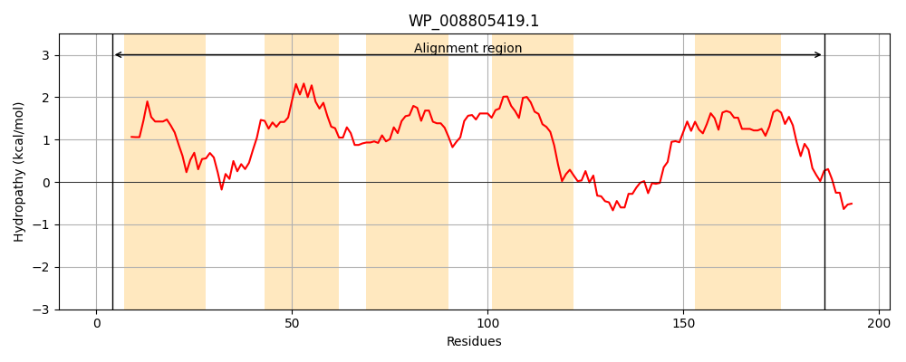
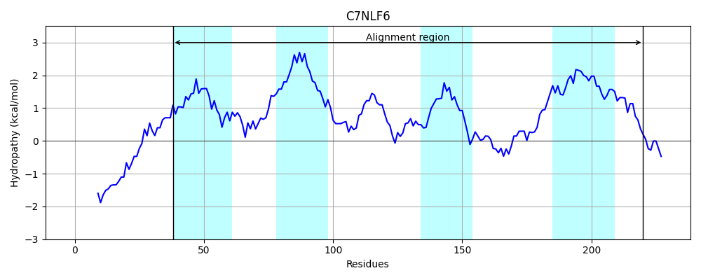
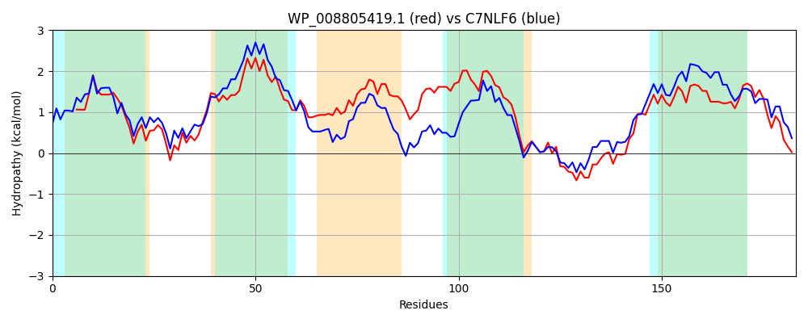

Hit Accession: C7NLF6
Hit TCID: 2.A.115.2.6
Hit Description: gnl|BL_ORD_ID|2670 gnl|TC-DB|C7NLF6|2.A.115.2.6 Predicted membrane protein OS=Kytococcus sedentarius (strain ATCC 14392 / DSM 20547 / CCM 314 / 541) GN=Ksed_21650 PE=4 SV=1
Mach Len: 183
e:0.000000
Query TMS Count : 5
Hit TMS Count: 4
TMS-Overlap Score: 4.150000
Predicted Substrates:None
BLAST Alignment:
Score: 543 , Bit scores: 213 bits, E-value: 2.3e-70, Alignment length: 183, Percentage identity: 57
Query: 4 RLLQLYIGLVLYGVSTALFVHANLGADPWDVFHLGVAKQLGISFGTVIILTGAAVLLLWIPIRQMPGLGTVSNVIVLGLAADATLAVLPPLESLVARSVLLVGAIVLNAIATGMYIGAGFGPGPRDGLMTGLHARTGWSLRGIRTAIELTVLVIGWLLGGKFGVGTVIYALSIGPLIQLCLPW 186
RL L +GL LYG S A+ + A LG PWDVFH+G+ L +SFG ++L G +LLLWIP+RQ PGLGT+ N +++G AAD TLA+LP E R L+V I LN +A+ MYIGA GPGPRDGLMTGL TGWSLR +RT +E+TV+V G LLGG GV T++YAL+IGPL Q LP+
Sbjct: 38 RLTWLLVGLALYGASMAMVLRATLGQIPWDVFHVGLGTHLPLSFGLTVVLVGVLLLLLWIPLRQPPGLGTLGNALLIGPAADLTLALLPTPEDWAPRIGLMVAGIALNGVASAMYIGAQLGPGPRDGLMTGLAHTTGWSLRVVRTGLEVTVIVAGVLLGGTLGVATILYALAIGPLTQAFLPY 220 | Protein Hydropathy Plots: |
|---|
|  |  |
Pairwise Alignment-Hydropathy Plot:
|
|---|
|  |